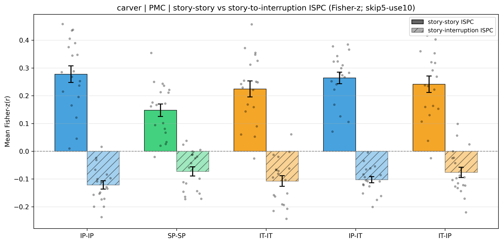
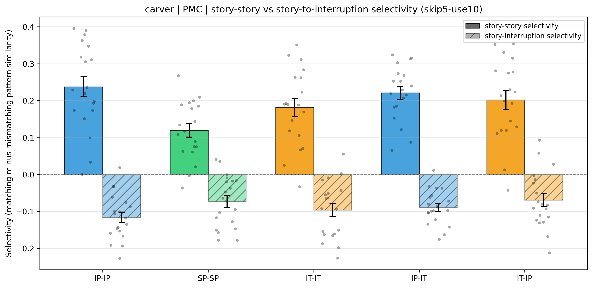

This is a preprocessing control for Result 3.1 and Result 3.2: the analysis windows, the pattern-similarity measure, the five inter-subject schemes, the statistics, and the report layout are identical to those used there; the only change is how each posterior-medial-cortex voxel is standardized. Instead of z-scoring each voxel over the entire run, the raw multivoxel patterns were loaded and each voxel was z-scored separately for the story phase and the interruption phase. The story-phase mean and standard deviation were estimated from every story segment after dropping its first five TRs (those returning from the preceding interruption, or from story onset), concatenated across segments; the interruption-phase mean and standard deviation were estimated from every interruption epoch after dropping the first five TRs from interruption onset, concatenated across the seventeen epochs. Story-phase TRs were then z-scored with the story-phase statistics and interruption-phase TRs with the interruption-phase statistics. If the inversion is an artifact of whole-run standardization it should weaken or disappear here; if it survives, it is robust to phase-specific standardization.
The inversion table reports the same statistics as Result 3.1: the group ISPC (θ̂z) with its standard error and the corresponding 95% confidence interval (θ̂z ± 1.96 SE), the primary sign-flip-on-jackknife permutation p, and n. The selectivity table reports the group selectivity, SE, bootstrap 95% CI, and the primary matching-vs-mismatching permutation p (with descriptive paired t, df, and Cohen's dz). Each table's legend defines its columns.
| Family | Cond | n | ISPC mean (r) | ISPC mean (Fisher-z, θ̂z) | SE | 95% CI | p (sign-flip) |
|---|---|---|---|---|---|---|---|
| story-story | IP-IP | 19 | 0.2407 | 0.2777 | 0.0300 | [0.2190, 0.3365] | 1.00e-04 |
| story-story | SP-SP | 19 | 0.1351 | 0.1478 | 0.0226 | [0.1036, 0.1920] | 1.00e-04 |
| story-story | IT-IT | 19 | 0.1973 | 0.2244 | 0.0286 | [0.1684, 0.2805] | 2.00e-04 |
| story-story | IP-IT | 19 | 0.2332 | 0.2642 | 0.0208 | [0.2234, 0.3051] | 1.00e-04 |
| story-story | IT-IP | 19 | 0.2114 | 0.2415 | 0.0296 | [0.1834, 0.2996] | 1.00e-04 |
| story-interruption | IP-IP | 19 | -0.1125 | -0.1217 | 0.0150 | [-0.1510, -0.0924] | 1.00e-04 |
| story-interruption | SP-SP | 19 | -0.0661 | -0.0727 | 0.0167 | [-0.1054, -0.0400] | 0.0040 |
| story-interruption | IT-IT | 19 | -0.0990 | -0.1075 | 0.0192 | [-0.1451, -0.0699] | 2.00e-04 |
| story-interruption | IP-IT | 19 | -0.0928 | -0.1027 | 0.0112 | [-0.1246, -0.0808] | 1.00e-04 |
| story-interruption | IT-IP | 19 | -0.0694 | -0.0763 | 0.0186 | [-0.1127, -0.0398] | 0.0011 |

| Family | Condition | n | Mean matching r | SEmatch | Mean mismatching r | SEmismatch | Selectivity (match − mismatch) | 95% CI (bootstrap) | Tested direction | Permutation p (one-tailed, expected direction) | Paired t | df | Cohen's dz |
|---|---|---|---|---|---|---|---|---|---|---|---|---|---|
| story-story | IP-IP | 19 | 0.2407 | 0.0265 | 0.0030 | 0.0022 | 0.2377 | [0.1850, 0.2879] | selectivity > 0 | 1.00e-04 | 8.812 | 18 | 2.022 |
| story-story | SP-SP | 19 | 0.1351 | 0.0199 | 0.0155 | 0.0055 | 0.1197 | [0.0842, 0.1539] | selectivity > 0 | 1.00e-04 | 6.499 | 18 | 1.491 |
| story-story | IT-IT | 19 | 0.1973 | 0.0253 | 0.0158 | 0.0038 | 0.1815 | [0.1353, 0.2258] | selectivity > 0 | 1.00e-04 | 7.541 | 18 | 1.730 |
| story-story | IP-IT | 19 | 0.2332 | 0.0179 | 0.0118 | 0.0036 | 0.2214 | [0.1880, 0.2534] | selectivity > 0 | 1.00e-04 | 12.827 | 18 | 2.943 |
| story-story | IT-IP | 19 | 0.2114 | 0.0260 | 0.0093 | 0.0028 | 0.2021 | [0.1529, 0.2483] | selectivity > 0 | 1.00e-04 | 7.971 | 18 | 1.829 |
| story-interruption | IP-IP | 19 | -0.1125 | 0.0136 | 0.0037 | 0.0010 | -0.1162 | [-0.1427, -0.0878] | selectivity < 0 | 1.00e-04 | -8.134 | 18 | -1.866 |
| story-interruption | SP-SP | 19 | -0.0661 | 0.0155 | 0.0068 | 0.0024 | -0.0730 | [-0.1044, -0.0418] | selectivity < 0 | 1.00e-04 | -4.446 | 18 | -1.020 |
| story-interruption | IT-IT | 19 | -0.0990 | 0.0178 | -0.0025 | 0.0019 | -0.0965 | [-0.1303, -0.0619] | selectivity < 0 | 1.00e-04 | -5.358 | 18 | -1.229 |
| story-interruption | IP-IT | 19 | -0.0928 | 0.0104 | -0.0040 | 0.0015 | -0.0888 | [-0.1095, -0.0675] | selectivity < 0 | 1.00e-04 | -8.145 | 18 | -1.869 |
| story-interruption | IT-IP | 19 | -0.0694 | 0.0169 | 0.0001 | 0.0014 | -0.0695 | [-0.1027, -0.0346] | selectivity < 0 | 1.00e-04 | -3.922 | 18 | -0.900 |

Bars show the group-mean selectivity (mean matching minus mean mismatching r) across participants; whiskers are ±1 standard error of the mean across participants (SD of the participant selectivity values / √n); dots are individual participant selectivity values. Solid bars are the story-story family; hatched bars are the story-interruption (inversion) family. Condition codes: intact-pause within group (IP-IP), scrambled-pause within group (SP-SP), intact-theory-of-mind within group (IT-IT), each intact-pause participant versus the intact-theory-of-mind group mean (IP-IT), each intact-theory-of-mind participant versus the intact-pause group mean (IT-IP).